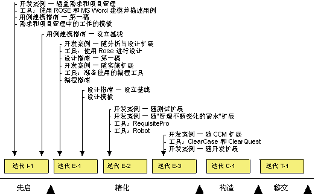
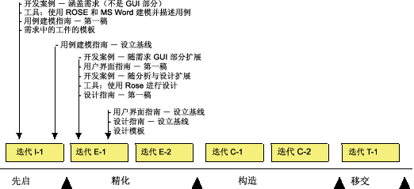

|
这些指南描述了如何通过执行环境规程中描述的活动，在软件开发项目中实施流程和工具。此外还讨论了计划项目、确定风险，以及管理、监视和评估项目的项目管理规程。
如“实施流程和工具的方法”中所述，有多种方法可实施流程和工具，明白这一点是很重要的。而方法是根据项目的当前状态及其周围的组织进行选择的，因此，要对项目及其周围组织进行评估（请参阅 工作产品：开发组织评估）。 工作产品：开发组织评估）。
这些指南描述了在项目中实施流程的一些可行方法。另外，概念：环境实践描述了一些对实施软件项目环境有用的基本实践。关于流程实施中流程定制部分的更多信息，请参阅定制 RUP。
这些常规指南几乎适用于每一个项目：
-
在项目启动之前：在项目实际启动之前，担当流程工程师、工具专家和项目经理的人员必须参加过 Rational Unified
Process（RUP）的培训。这对项目是否能成功是至关重要的。如果项目成员不知道该做什么，那么他们不会成功。
-
先启阶段：在此阶段，通常应注重理解如何改进管理需求（需求规程）的方法，以及如何管理项目（项目管理规程）。
-
精化阶段：在精化阶段结束时，所有的流程和工具都已准备就绪。此阶段最关键的部分通常是如何执行配置和变更管理，因为在构造阶段，该工作由并行工作的开发团队执行。
-
构造阶段：在此阶段中不引入新的流程或工具。此阶段的重点在于生产产品，因此开发环境必须是稳定的。在构造阶段中，动机是使项目中的新进人员赶上进度。
-
移交阶段：将不引入新流程或工具。在移交阶段中，重点将从特定于项目的流程改进转为项目总结，即从当前项目收集项目经验，进行总结并以将来项目可使用的格式封装起来。这些收集的经验将充当输入，用以改进产品下次演进的开发流程和工具。
流程仪式在不同的开发组织中有很大不同。有些组织的流程非常成熟，有专门的流程小组管理整个组织内流程的定义和改进。而其他组织则只关心特定于项目的流程定制。
定制项目流程的方法很大程度上依赖于组织的流程仪式，以及其他几个因素。例如：
-
开发组织的流程成熟性。
-
项目的大小，指日历时间和开发资源的数量。
-
项目成员先前与类似流程的接触情况。
-
项目的形式需求。
关于影响流程实施的因素的更多信息，请参阅指南：流程判别式。
以下是在软件开发项目中实施流程和工具的基本方法：
-
“彻底更改”。这表示项目将采纳整个 RUP 和一组完整的新工具。
-
“改进流程和工具”。这说明项目决定通过采纳部分 RUP 和支持工具，来改进流程和工具的部分区域。
要采纳 RUP 的比例和决定在特定项目中实施的新工具数量取决于多个因素。在指南：流程判别式中描述了这些因素。在项目及其周围组织的评估中，通常不会揭示这些因素。 这些信息可在 工作产品：开发组织评估中获得。
项目可由于以下部分或全部原因而决定采纳完整的 RUP 并开始使用一组新工具：
-
流程或工具没有准备就绪，而项目需要完整的流程和所有的工具。
-
所有或几乎所有的人员都是新雇员，并且没有达成一致的工作方法。
-
项目将改为使用组织的新技术，这说明现有流程和工具将会过时。
如果您决定将完整的 RUP 和工具引入项目，则递增实施流程和工具是很重要的。通过逐步实施流程和工具步骤，管理风险会更加容易，并且这些更改对项目人员的影响也会减小。下图说明了在项目生命周期中，开发不同环境工作产品的时间。

“全新”项目中环境工作产品的演进。
计划的注释：
-
总体：将完全跳过业务建模规程。
-
先启：注重引入需求和项目管理规程。为减少新因素的数量，将不引入需求的用户界面部分。项目经理决定要使用项目管理规程中的哪些部分。
-
精化迭代 E-1：在精化阶段中，分析与设计及体系结构是最重要的。在项目早期，自动化测试和配置与变更管理不如分析与设计及体系结构重要，因为当时项目成员相对较少。因此可随后在项目中引入。
-
精化迭代 E-2：将测试工具和流程引入自动化测试。将引入 Rational RequisitePro 用于管理变化的需求。
-
精化迭代 E-3：在构造阶段中，将由并行工作的开发团队执行该工作。因此，在精化阶段结束时，将配置与变更管理规程准备就绪是至关重要的。部署管理员决定如何执行部署规程中的规程。
-
构造：未引入新内容。从环境的角度来说，构造阶段的重点在于使项目中所有的新进人员赶上进度。
-
移交：未引入新内容。可按需优化流程和工具。
处于流程和工具均准备就绪的组织中的项目人员具有开发系统的能力。这些人员都具有统一的工作方法，而该方法可能是或多或少记录下的流程。
长期目标可能采纳完整的 RUP 和一组完整的新工具。但是，短期目标是为了改进流程和工具支持中的一个或多个区域。而这些区域应该最具有改进可能。
下图显示的项目示例决定采纳需求规程和工具（诸如 RequisitePro 和 Rational Rose），用于改进需求管理方法。该项目还决定引入分析与设计规程。

改进需求和分析与设计时，环境工作产品的演进。
上图只是一个示例，明白这一点很重要。决定改进的流程部分根据不同项目的问题和需要而有所不同。您必须评估项目及其周围组织，从而发现要改进的流程部分或要引入的工具。
以下是先启阶段中迭代的示例，该阶段中已引入需求规程。 甘特图中的每个条目都在表后有详细描述。
先启阶段中迭代的示例
经典 RUP 先启的基本工作流程适用于这些变体和扩展。
项目管理
将项目从初始构想发展为可合理决定继续或放弃的程度。主要结果是工作产品：业务案例、工作产品：软件开发计划和工作产品：风险列表的初始草稿。
确定项目中的风险，包括与实施新流程和工具相关的风险。结果为工作产品：风险列表。
规划阶段。主要结果为软件开发计划中的“项目计划”一节。这包括了“阶段计划”，您可在其中找到主要里程碑及其达成条件，包括环境规程的条件。
注意：定制的开发流程对软件开发计划有很大影响，反之亦然。因此，项目计划的开发必须与流程的定制相协调。
详细计划迭代，包括环境规程和其他所有规程。主要结果是工作产品：迭代计划，含有环境规程和所有其他流程规程的所有活动详细信息和任务。
流程和工具的使用被视为迭代评估的一部分。结果为：
项目经理监视日常工作，包括流程和工具。
在迭代结束时，将重新评估风险，包括与流程和工具相关的风险。在确定迭代和新风险期间，一些风险会有所减轻。主要结果是更新后的工作产品：风险列表。
需求
无特定更改。
测试
可定义工作产品：测试策略的一些逻辑方面，从而提供初始论证，用作测试工作的资源。
测试设计人员和测试员的小型团队将针对工作产品：概念的体系结构验证验证测试方法的关键元素是否可行，并将第三方组件选择作为可测试内容进行验证。
环境
评估组织的现有状态，并决定在首次迭代中要侧重的流程部分和工具。在这种情况下，项目将根据评估决定开始实施流程和工具。
注意：软件开发计划对定制开发流程有很大影响，反之亦然。因此，流程的定制必须与项目计划的开发相协调。
结果为：
为需求规程以及支持工具准备流程和工具，以便项目相关人员可以开始使用它们。（当然，也可准备其他规程。）请参阅任务：定制项目的开发流程。
请确保项目相关人员知道如何使用开发流程、用例建模指南和工具。除了标准培训教程之外，我们还建议安排为期一天的研讨会，项目成员可从中获取实际经验。请参阅任务：启动开发流程。
执行活动的结果为：
-
开发流程，其中详细描述了需求规程，包括
-
-
已设置需求 工具并可供项目相关人员使用。
系统管理员在迭代期间支持开发人员。
培训
-
项目的所有成员都应参加概述 RUP 的教程，以对项目的生命周期有基本了解。
-
处理正在“展示”的 RUP 规程的人员应参加教程学习，从中学习规程的详细信息。
指导
指导是成功实施流程的关键。一般来说，需要以下导师：
-
流程导师占用 50% 的时间。该人员充当流程工程师，支持项目经理以及项目中的其他人员使用和配置流程。
-
<特定于规程>导师占用 50% 的时间。该人员通过召开研讨会、复审结果和回答特定问题，促进特定于规程的工作。
关于指导的更多信息，请参阅概念：指导。 |